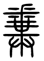
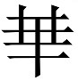

正義曰：「以」者，主婚之辭。「子」者，儀禮·喪服經：「女子子在室爲父。」注：「子，女也。」「妻」者，以女適人，與之爲妻也。說文「妻，婦與夫齊者也。」大戴禮·保傅云：「謹爲子孫娶妻嫁女，必擇孝悌世世有行義者。」故此辨其非罪。及論南容，亦稱其德行，示當謹擇士也。非其罪，傳無所聞。皇疏引范寧曰：「公治行正獲罪，罪非其罪，孔子以女妻之，將以大明衰世用刑之枉濫，勸將來實守正之人也。」又引別書名論釋稱公治長解禽語，食死人肉，致疑爲殺人，繫獄。邢疏斥其不經。愚以周官「夷隸掌與鳥言」，「貉隸掌與獸言」，則以公治解鳥語，容或有之，而謂因此獲罪，則傅會之過矣。「紲」，唐石經作「絏」，張參五經文字以爲避諱偏旁。
○注：「治長」至「罪人」。 ○正義曰：史記·弟子傳：「公冶長，齊人。」家語弟子解則云「魯人」，與此孔注合。史記「長可妻也」，不連「公治」爲文，故此注以公冶爲姓，長爲名。而又稱「冶長」者，猶馬遷、葛亮之比，凡兩字姓，得單舉一字也。家語云「名萇」，邢疏引家語作「字子長」，釋文引家語作「字子張」，據史傳亦「字子長」。皇疏及釋文引范寧曰：「名芝，字子長。」白水碑作「子之」，似又以子之爲字。諸說各異，當以史傳爲正。 「縲」爲黑索者，說文無「縲」字，「纍」下云：「綴得理也，一曰大索也。」「縲」與「纍」同。凡索皆綴屬而成，故兩訓可互取。史記此文作「累」，淮南子氾論訓「累紲」兩見。孟子·梁惠王下「係累其子弟」，趙歧注：「係累，猶縛結也。」荀子·成相「箕子累」，楊倞注：「累讀爲縲。」案：「累」即「纍」之省。春秋左氏傳「不以纍臣釁鼓」，「兩釋纍囚」，「使其衆男女別而纍」，皆以纍爲索也。說文：「紲，系也。從系，世聲。緤，紲或從枼。」廣雅釋詁：「紲，系也。」釋器：「紲，纍索也。」少儀：「犬則執紲。」左氏傳：「臣負覊紲。」是紲亦繩索之稱。凡繫人繫物，皆謂之紲。孔以「紲」爲攣者，說文：「攣，係也。」易中孚：「有孚攣如。」馬注：「攣，連也。」虞注：「攣，引也。」義皆可證。
正義曰：爾雅·釋詁：「廢，舍也。」此常訓。說文：「戮，殺也。」廣雅·釋詁：「戮，殺也，辱也，辠也。」義皆相近。大載禮·衛將軍文子篇：「獨居思仁，公言言義，其聞之詩也，一日三復白圭之玷，是南宮縚之行也。夫子信其仁，以爲異姓。」盧辯注：「謂以兄之子妻之也。」案：「思仁」、「言義」，則有臨民之德，當國有道時，必見錄用也。其心謹言，則當無道時，危行言遜，故可免刑戮也。皇疏云：「昔時講說，好評公冶、南容德有優劣，故妻有己女、兄女之異。侃謂二人無勝負也。卷舒隨世，乃爲有智，而枉濫獲罪，聖人猶然，亦不得以公治爲劣也。以己女妻公冶，以兄女妻南容，非謂權其輕重，政是當其年相稱而嫁事，非一時在次耳，則可無意其間也。」「兄之子」者，史記·索隱引家語云：「梁紇娶魯之施氏，生九女。其妾生孟皮，病足，乃求婚於顔氏徴在。」則孔子兄即孟皮也。孟皮此時已卒，故孔子爲兄子主婚。
○注：「南容」至「子容」。 ○正義曰：「南宮」者，兩字氏，亦單舉一字，故曰「南」。史記·仲尼弟子列傳：「南宮括，字子容。」「括」又作「适」。史以南宮括、南容爲一人，此注又以南容、南宮縚爲一人。檀弓：「南宮縚之妻之姑喪，夫子誨之髽[zhuā]。」而家語又以「三復白圭」爲「南宮韜之行」，韜與縚同。論語釋文亦云：「縚，本又作韜。」則陸所見此注亦作韜。韜與容、括義皆相貫，作縚作適，皆通用字。鄭氏檀弓注云：「南宮縚，孟僖子之子南宮閱也，字子容，其妻孔子兄女。」疏云：「案：左氏傳『孟僖子將卒，召其大夫云：「屬說與何忌於夫子，以事仲尼」。』以南宮爲氏，故世本云：『仲孫玃生南宮縚』是也。」案：仲孫玃即孟僖子，世本誤以南宮縚、南宮閱爲一人，而鄭君遂承其誤。閱與說通用字，左傳所云「屬說」，即南宮閱也，又名仲孫閱，又名南宮說，而其謚爲敬，其字爲叔，與南宮縚無涉。自鄭君誤依世本，而陸德明釋文、司馬貞史記索隱皆沿用之。然漢書·古今人表分列南宮敬叔、南容爲二人，則世本不可信。明錢可選箸補闕疑曾列四疑以辨之，謂孔子在魯，族姓頗微，而敬叔爲公族元士，定己娶彊家，豈孔子得以兄子妻之？又檀弓載「南容敬叔反，必載寶而朝」，孔子謂「不如速貧之愈」。若而人豈能抑權力而伸有德，謹言行而不廢於有道之邦者耶？毛氏奇齡四書賸言亦謂敬叔即曾受僖子命，與其兄懿子學禮孔子，然並不在弟子之列。史記、家語所載弟子止容一人，向使容即敬叔，則未有載敬叔不載懿子者，至縚妻姑喪，孔子誨其女髽法。若是敬叔，則此姑者，孟僖子妻也。世族喪服自有儀法，不容誨也。至若史記、家語，各載敬叔從孔子適周，見金人緘口，孔子戒以謹言，事與容無涉。二家之論致確。梁氏玉繩古今人表攷、史記志疑說畧同。惟毛氏賸言以南宮別爲一人，非是。南容與史記不合，其誤顯然，此故不載其說也。又顔師古漢書注：「南容即南宮縚也，敬叔即南宮括也。」以南宮括爲敬叔，亦誤。
正義曰：呂氏春秋·察賢篇：「宓子賤治單父，彈鳴琴，身不下堂，而單父治。巫馬期以星出，以星入，日夜不居，以身親之，而單父亦治。巫馬期問其故於宓子。曰：『我之謂任人，子之謂任力，任力者故勞，任人者故逸。』宓子則君子矣。」韓詩外傳同。又云：「子賤治單父，其民附。孔子曰：『告丘之所以治之者。』對曰：『所父事者三人，所兄事者五人，所友者十有二人，所師者一人。』孔子曰：『所父事者三人，足以教孝矣；所兄事者五人，足以教弟矣；所友者十有二人，足以袪壅蔽矣；所師者一人，足以慮無失策，舉無敗功矣。惜也不齊爲之小，不齊爲之大，功乃與堯、舜參矣。』」說苑·政理篇略同。然則夫子所云魯之君子，即指所父事、兄事、所友、所師者言。子賤爲政，在能得人，故說苑又載子賤告夫子以三得，終之以朋友益親，夫子贊美子賤能取人，而又以見魯多君子，故云：「若魯無君子，子賤安所取法以成其治乎。」新序·雜事二：「魯君使宓子賤爲單父宰，子賤辭去，因請借善書者二人，使書憲書教品，魯君予之。至單父使書，子賤從旁引其肘，醜則怒之，欲好書則又引之。書者患之，請辭而去，歸以告魯君。魯君曰：『子賤苦吾擾之，使不得施其善政也。』乃命有司無得擅徵發單父，單父之化大治。故孔子曰：『君子哉子賤，魯無君子者，斯安取斯？』美其德也。」新序與說苑同出劉向。蓋魯君信用子賤，而子賤又能取人以輔其治，故孔子美之。
○注：「子賤，魯人，弟子宓不齊。」 ○正義曰：史記·弟子列傳：「宓不齊，字子賤，少孔子四十九歲。」不言何國人。家語·弟子解始云「魯人」，與此注合。漢書·藝文志有「宓子十六篇」，顔師古注：「宓讀與伏同。」又或作虙，見五經文字所引論語釋文。然釋文以作「宓」爲誤，則不知「虙」、「宓」俱從必得聲，未爲誤也。又或作「密」，見淮南子·泰族訓。
正義曰：夫子論諸弟子，非在一時，記者以次書之。皇疏謂「子貢聞孔子評諸弟子而不及己，故有此問」，非也。惠氏棟九經古義：「瑚璉當爲胡連。春秋傳曰：『胡簋之事』，明堂位曰『夏後氏之四連』，皆不從玉旁。孔廟·禮器碑又作胡輦，古連、輦字通。段氏玉裁說文注引禮器碑，又引司馬法『夏后氏輦曰餘車，殷曰胡奴車，周曰輜輦。』」疑「胡輦」皆取車爲名。案：說文：「槤，瑚槤也。」其字從木，當是以木爲之。潛夫論·讚學云：「胡簋之器，其始也，乃山野之木。」是其證。陳祥道禮書：「瑚以玉，簋以竹爲之。」祇以瑚字從玉，簋字從竹，妄爲說之，無他證也。馮氏登府異文考證考「胡連」本瓦器，而飾以玉。孟郁修堯廟碑「瑚」字又作𡎁，可知胡連本瓦器，故後人又加土旁。案：考工記：「旊[fǎng]人爲簋。」馮見簋是瓦器，而明堂位以「四連」、「六瑚」、「八簋」爲文，則胡連亦瓦器。然旊人疏云：「祭宗廟皆用木簋，今此用瓦簋，祭天地及外神尚質，器用陶匏之類也。」則簋有以木，以瓦之異。堯廟碑是祭外神，當用瓦，故字作𡎁。若論語言祭宗廟之器，本不用瓦，不得同彼文作𡎁也。
○注：「瑚璉」至「貴者」。 ○正義曰：鄭注云：「黍稷器，夏曰瑚，殷曰璉。」與包咸同。說文云：「黍，禾屬而黏者也。稷，𪗉[zī]也。」程氏瑤田九榖考說：「黍穗似禾而舒散，今北人稱黃小米。稷，今之高粱。」宗廟之祭，食用黍稷，此瑚璉爲盛黍稷器也。其制之異同，鄭注明堂位已云「未聞」。凌氏曙典故覈引三禮圖：「瑚受一升，如簋而平下。璉受一升，漆赤中，蓋亦龜形，飾口以白金，制度如簋而銳下。」則以瑚圜璉方，未知何本。明堂位稱夏之四璉，殷之六瑚，今包、鄭注俱云「夏瑚殷璉」，賈、服、杜注左傳亦言「夏曰瑚」，疑今本明堂位文有誤也。「周曰簠簋」者，鄭注周官·舍人云：「方曰簠，圜曰簋，盛黍稷稻粱器。」賈疏：「案孝經云『陳其簠簋』，注云『內圜外方，受斗二升』者，直據簠而言。若簋則內方外圜。」此其制也。夫子言「賜也達，可使從政」，故以宗廟貴器比之。言女器若瑚璉者，則可薦鬼神，羞王公矣。
正義曰：說文云：「佞，巧讇高材也。」曲禮·釋文：「口才曰佞。」下篇「惡夫佞者」、「無乃爲佞乎」訓同。仲弓德行中人，行必先人，言必後人，或者以爲仁而不佞者。當時尚佞，見雍不佞，故深惜之。「禦」者，爾雅·釋言云「禁也」。「不知其仁」，言以口給禦人，不知其人於仁何如也。唐石經初刻作「其仁」，後磨改作「其人」，皇本末二句尾並有「也」字。
○注：「雍，弟子。仲弓名。姓冉。」 ○正義曰：史記·弟子列傳：「冉雍，字仲弓。」鄭目錄云「魯人」。論衡·自紀篇以仲弓爲冉伯牛子，史紀·索隱引家語又云：「伯牛之宗族。」二說各異，當從論衡。
○注：「屢數」至「憎惡」。 ○正義曰：毛詩賓筵傳：「屢，數也。」此常訓。「捷給」者，捷，速也。給，足也。荀子·性惡篇：「齊給便敏而無類。」注：「給謂應之速，如供給者也。」非十二子篇：「齊給便利而不順禮義。」注：「給，急也。」速、急皆引申之義。大戴禮·保傅篇：「接給而善對。」曾子立事篇：「進給而不讓。」說苑·尊賢篇孔子對哀公以取人之術曰：「毋取拑者，毋取口銳者。拑者大給利，不可盡用，口銳者多誕而寡信，後恐不驗也。」皆謂口辭捷給也。韓詩外傳：「人之利口贍辭者，人畏之，畏之斯惡之。子曰：『惡利口之覆家邦者。』」
正義曰：釋文：「雕，本或作凋。」皇本、唐、宋石經皆作「彫」。邢本作「雕」，與釋文合。阮氏元校勘記：「依說文當作琱。凡琱琢之成文則曰彫，雕、凋皆叚借字。」案：依阮說，漆雕氏必其職掌漆飾琱刻，以官爲氏者也。夫子使開仕，當在爲魯司冠時。皇疏云：「答師稱吾者，古人皆然也。」考答師稱吾，僅見此文。宋氏翔鳳過庭錄：「疑吾爲启字之訛，启即啟字。」亦通。
○注：「開弟」至「究習」。 ○正義曰：史記·弟子列傳：「漆雕開，字子開。」閻氏若璩四書釋地謂「上開本啟字，漢人避諱所改。」引漢藝文志「孔子弟子漆雕啟」證之，其說是也。古今人表亦作「啟」，啟者，開也。故字子開。此注以開爲名，作僞者之疏可知。楊簡先聖大訓又名憑，家語弟子解又字子若，白水碑字子脩，皆妄人所造。鄭目錄云：「魯人」，家語則云「蔡人」，亦誤也。仕進之道，恐未能究習，故云「未能信」。信者，有諸己之謂也。由開之言觀之，其平時好學，不自矝伐，與其居官臨民謹畏之心，胥見於斯。其後仕與不仕，史傳並無明文。家語謂開「習尚書，不樂仕」。夫不樂仕，非聖人之教，中庸云：「誠者非自成己而已也，所以成物也。」夫子謂「仁者，己欲立而立人，己欲達而達人」。子路亦謂「不仕無義，欲潔其身，而亂大倫」，是開之言「未能信」，實以仕進之道未能究習，而非不樂仕矣。此注雖僞作，猶能不失其義。王肅注家語云：「言未能明信斯書義。」是肅自爲附會。
正義曰：「乘」，說文作「椉」，云「覆也」。覆者，加乎其上也。詩·七月傳：「乘，升也。」「浮」者，說文云「氾也」。漢書·地理志注：「浮，以舟渡也。」「于」皇本作「於」，爾雅·釋詁：「于，於也。」二字義同，故經傳通用。王氏瑬四書地理考：「浮海指渤海。」說文：「海，天池也。以納百川者。」又云：「澥，勃澥，海之別也。」潛丘劄記：「太史公多言勃海，河渠書謂永平之勃海，封禪書謂登萊之勃海，蘇秦列傳指天津衛之海，朝鮮列傳指海之在遼東者。勃海之水大矣，非專爲近勃海郡者也。」案：漢書·地理志：「玄莬，樂浪，武帝時置，皆朝鮮、濊[huì]貉、句麗蠻夷。殷道衰，箕子去之朝鮮，教其民以禮義，田蠶織作。樂浪、朝鮮民犯禁八條：相殺以當時償殺；相傷以穀償；相盜者男沒入爲其家奴，女子爲婢，欲自贖者，人五十萬。雖免爲民，俗猶羞之，嫁娶無所讎，是以其民終不相盜，無門戶之閉，婦人貞信不淫辟。可貴哉，仕賢之化也!然東夷天性柔順，異於三方之外，故孔子悼道不行，設浮於海，欲居九夷，有以也。」顔注：「言欲乘桴筏而適東夷，以其國有仁賢之化，可以行道也。」據志言，則浮海指東夷，即勃海也。夫子當日必實有所指之地，漢世師說未失，故尚能知其義，非泛言四海也。夫子本欲行道於魯，魯不能竟其用，乃去而之他國，最後乃如楚。則以楚雖蠻夷，而與中國通已久，其時昭王又賢，葉公好士，故遂如楚以冀其用，則是望道之行也。至楚，又不見用，始不得已而欲浮海居九夷，史記·世家雖未載「浮海」及「居九夷」二語，爲在周遊之後，然以意測之當是也。其欲浮海居九夷，仍爲行道，由漢志注繹之，則非遯世幽隱，但爲世外之想可知，即其後浮海居九夷，皆不果行，然亦見夫子憂道之切，未嘗一日忘諸懷矣。其必言乘桴者，錢氏坫論語後錄謂「爾雅·釋水『庶人乘泭』，夫子言道不行，以庶人自處」，是也。說文：「憙，說也。從心從喜，喜亦聲。」今經傳通作「喜」，皇本「由」下有「也」字。
○注：「桴，編竹木，大者曰栰，小者曰桴。」 ○正義曰：詩·周南疏引論語注與此注同。臧、宋以爲鄭注佚文，或鄭用其師說也。說文：「桴，棟名。」別一義。「泭，編木以渡也。」爾雅·釋言：「舫，泭也。」孫炎注：「方木置水中爲泭筏也。」釋文：「泭字或作𣻜，樊本作柎。」釋水李巡注：「併木以渡也。」詩·周南「不可方思」，邶風「方之舟之」，毛傳並云「方，泭也。」方與舫同。周南·釋文：「泭本亦作𣻜，又作桴，或作柎。」諸字惟「桴」是叚字，餘皆同音異體也。韋昭國語注：「編木曰泭，小泭曰桴。」分泭桴爲二，失其義矣。王逸楚辭·惜往日注：「編竹木曰泭。」與此注同。方言：「泭謂之𥱼，𥱼謂之筏。筏，秦晉之通語也，江淮家居𥱼中謂之薦。」廣雅·釋水：「𥱼、柎、㶇，筏也。」衆經音義卷三：「筏，通俗文作𦪑，韻集作橃。編竹木浮於河以運物也。南土名𥱼，北人名筏。」楚辭王逸注：「楚人曰泭，秦人曰橃。」筏𦪑橃並同。周南釋文引郭璞音義云：「木曰𥱼，竹曰筏，小筏曰泭。」泭爲小，則筏爲大，此據人當時所稱別之。然泭、筏對文，有大小之殊，散文亦通稱。故方言廣雅廣列異名，不爲分別也。
○注：「喜與已俱行。」 ○正義曰：子路親師，雖相從患難勿恤也。今見夫子使從浮海，若夫子獨許己與之俱行，故聞而喜也。
子曰：「由也好勇過我，無所取材。」〔注〕鄭曰：「子路信夫子欲行，故言好勇過我。『無所取材』者，無所取於桴材。以子路不解微言，故戲之耳。」一曰「子路聞孔子欲浮海便喜，不復顧望，故孔子歎其勇曰過我。『無所取哉』，言唯取於己。古字材、哉同。」○注：「子路」至「哉同」。 ○正義曰：注用鄭義。後則集解兼存他說也。釋文：「『過我』絕句。」此本鄭氏。又云：「一讀過字絕句。」此集解後說。說文：「材，木梃也。」周官·太宰「五曰材貢」，史記·貨殖傳「山居千章之材」，並謂木也。夫子浮於海，是不得已之思，其勢必不能行，子路信爲實然，則以不解夫子微言故也。「微」者，爾雅·釋詁云：「匿，微也。」微者，隱也。其義深隱，則曰「微言」，猶所謂「隱語」也。子路伉直，不解微言，故夫子但言「無所取材爲桴」以戲之，所以深悟之也。爾雅·釋詁：「戲，謔也。」三國吳志·薛綜傳權欲浮海親征公孫淵，綜諫曰：「昔孔子疾時，託乘桴之語，季由是喜，拒以無所取才。」繹其辭義，亦謂桴材。作「才」者，叚借字。「一曰」云云，以「過」爲好勇太過我。「無所取材」，爲但以由從，不復取他人哉，言必不能也。云「古字材哉同」者，馮氏登府異文考證「哉字從才，才與哉通。」崔瑗張平子碑：「往才汝諧。」邢昺爾雅疏：「哉，古文才。」
正義曰：史記·弟子列傳作「季康子問」，當出古論。釋文：「賦，梁武帝云：『魯論作傅。』」陳氏鱣古訓曰：「賦，傅同音，故魯論借用。」大戴禮·衛將軍文子篇子貢歷言仲由、冉有、公西赤之行，文子以爲一諸侯之相。與此章所論相合。程氏瑤田論學小記：「夫仁，至重而至難者也。故曰『仁以爲己任，任之重也。死而後已，道之遠也』。如自以爲及，是未死而先已，聖人之所不許也。故曰『回也，其心三月不違仁』，『吾見其進也，未見其止也』。言夫行恕以終其身，死而後已，不自以爲及者也。故有問人之仁於夫子者，則皆曰『未知』，蓋曰吾未知其及焉否也。」
○注：「賦，兵賦。」 ○正義曰：鄭注：「賦，軍賦。」此孔所襲。說文：「賦，斂也。」顔師古漢書·地理志注：「賦者，發斂土地所生之物，以供天子也。」胡氏渭禹貢錐指：「周時軍旅之征謂之賦。」周禮大司馬注：「賦，給軍用者也。」小司馬注曰：「賦謂出車徒給繇役也。」左傳曰：「天子之老請帥王賦。」又曰：「悉索敝賦」，又曰：「韓賦七邑」，又曰：「魯賦八百乘，邾賦六百乘」。又曰：「鄫無賦於司馬」，其所謂賦者，軍賦也。
「求也何如？」子曰：「求也，千室之邑，百乘之家，可使爲之宰也，不知其仁也。」〔注〕孔曰：「千室之邑，卿大夫之邑。卿大夫稱家。諸侯千乘。大夫百乘。宰，家臣。」正義曰：武伯更問求、赤於仁何如？夫子直告以二子之才，不俟再問也。「千室之邑」者，說文：「室，實也。從宀從至，至所止也。邑，國也。從口。先王之制，尊卑有大小，從卪[jié]。」宰者，公羊·隱元年傳：「宰者何？官也。」古凡大小官多稱宰，如冢宰、大宰、膳宰、宰夫、宰胥、宰旅及邑長家臣，皆名宰也。左隱元年疏引鄭注論語云：「公大都之城，方三里。」臧、宋輯本列之此文之下，考左傳云：「凡邑有宗廟先君之主曰都。」又云：「先王之制，大都不過參國之一。」鄭以國爲上公之國。周官·典命：「公九命，其國家宮室、車旗、衣服、禮儀皆以九爲節。」鄭注云：「公城蓋方九里。」是大都三國之一，則爲三里矣。就鄭君殘注繹之，千室之邑謂公邑。凌氏曙四書典故覈云：「周官之制，天子自六鄉以外，分六遂及家稍、小都、大都。其餘之地，制爲公邑，使大夫治之。在二百里、三百里以上，大夫如州長，在四百里、五百里以下，大夫如縣正；皆屬於遂人。載師『以公邑之田任甸地』，舉甸以該稍、縣、畺也。鄉遂之民，以七萬五千家爲定，其餘夫皆受田於公邑，故遂人授民夫以廛，田百畮，萊五十畮，餘夫亦如之。餘夫所受，公邑之萊也。太宰『九賦』，邦甸、家稍、都鄙之賦皆公邑所出。諸侯之國亦然。以魯言之，三鄉三遂之外，除大夫之采邑，皆公邑。孔子爲中都宰，子夏爲莒父宰，子賤爲單父宰，子游爲武城宰，皆公邑也。惟費宰爲季氏邑，成宰爲孟氏邑，郈宰爲叔孫氏邑，非公邑耳。王畿之地，鄉遂以家計，公邑蓋以里計。諸侯之地，皆以家計。故春秋之世，動云書社幾百，蓋二十五家爲社，可知邑之大小，皆論室之多少也。周禮：『四井爲邑，四邑爲丘，四丘爲甸，四甸爲縣，四縣爲都。』鄭注：『甸方八里，旁加一里治洫，則方十里爲一成。四甸爲縣，方二十里。』縣二百五十六井，二千三百四十夫之地。以鄭意推司馬法算之，宮室塗巷三分去一，通不易，一易，再易計之，爲一室受二夫之田，實一縣受田出稅人爲七百六十九夫，又旁加一里，內受田治洫人四百三十一夫，共千二百夫。云『千室之邑』，舉成數也。或容有餘夫分授，杜氏注左傳『築郿』曰：『四縣爲都，四井爲邑。然宗廟所在，則雖邑曰都，尊之也。』孔疏引釋例曰：『邑有先君宗廟，雖小曰都，都而無廟，固宜稱城。』案：此則自井以上至縣，凡有城皆稱邑。至四縣爲都，乃稱都，故云『千室之邑』。其宰則如周禮之縣正也。」鄭此注又云：「大夫之家，邑有百乘，采地一同之廣輪也。」案：大學云：「百乘之家」。鄭注：「有采地者也。」坊記云：「家富不過百乘」。兩疏以爲皆卿采邑，凡卿亦稱大夫，故鄭君此注及雜記注並言大夫有百乘也。坊記疏以爲百里正一同之制。司馬法：「六尺爲步，步百爲畮[mǔ]，畮百爲夫，夫三爲屋，屋三爲井。井十爲通，通爲匹馬三十家，士一人，徒二人。通十爲成，成百井，三百家，革車一乘，士十人，徒二十人。十成爲終，終千井，三千家，革車十乘，士百人，徒二百人。十終爲同，同方百里，萬井，三萬家，革車百乘，士千人，徒二千人。」此司馬法，鄭君引以注小司徒，知此采地一同亦其制也。賈公彥小司徒疏云：「謂之爲同者，取角雷震百里所聞同。」是同方百里之義也。「廣輪」猶言廣長，凡輪皆直行，此據開方法言之。
○注：「千室之邑，卿大夫之邑。」 ○正義曰：注以「千室之邑」爲卿大夫采邑，不爲公邑，與鄭氏異。則似冉有祇能仕於私家，於義未備也。皇疏云：「舊說五等之臣，其采地亦爲三等，各依其君國十分爲之。上公地方五百里，其臣大采方五十里，中采方二十五里，小采方十二里半。侯方四百里，其臣大采方四十里，中采方二十里，小采方十里。伯方三百里，其臣大采方三十里，中采方十五里，小采方七里半。子方二百里，其臣大采方二十里，中采方十里，小采方五里。男方百里，其臣大采方十里，中方五里，小采方二里半。凡制地方一里爲井，井有三家，若方二里半，有方一里者六，又方半里者一，則合十八家有餘，故論語云『十室之邑』也。其中大小各隨其君，故或有三百戶，是方十里者一，或有千室，是方十里者三有餘也。」
「赤也何如？」子曰：「赤也，束帶立於朝，可使與賓客言也，不知其仁也。〔注〕馬曰：「赤，弟子公西華。有容儀，可使爲行人。」正義曰：說文：「束，縛也。」釋名·釋言語：「束，促也，相促近也。」「帶」，繋繚於要，所在整其衣，故曰「束帶」。釋名·釋衣服：「帶，蔕[dì]也。著於及，如物之繋蔕也。」漢孫根碑：「束鞶[pán]立朝」，本此文。當爲齊、古之異。鞶者，革帶。段氏玉裁說文注云：「古有大帶，有革帶。革帶以繋佩韍，而後加之大帶，則革帶統於大帶，故許於鞶曰大帶也。」戴氏清四書典故考辨：「凡冕服皆素帶，而爵弁、皮弁、朝服玄端皆緇帶。爲擯相者，當服皮弁，所謂束帶與賓客言者，乃緇帶也。」「立於朝」者，立與位同。爾雅·釋宮：「中庭之左右謂之位。」左氏傳「有位於朝」，即立於朝也。禮行聘於廟，朝會燕饗則於廟，或於朝，或於寢。此祇言朝者，亦舉一以賅耳。凌氏曙四書典故覈：「其立位則接賓時，陳擯於大門外，上擯近君，門東，西面，既入廟門，擯者負東上立，則在中庭。至授玉時，上擯進阼階之西，釋辭於賓，遂相君拜，既受玉，退負東塾而立。」此但依聘禮言之，亦舉聘則他禮可推知也。說文：「賓，所敬也。客，寄也。」謂他國諸侯及卿大夫也。凌氏廷堪禮經釋例：「案聘禮：『及廟門，几筵既設，擯者出請命。』注：『上擯待而出，請受賓所以來之命，重停賓也。』又云：『擯者入告，出辭玉。』注：『擯者，上擯也。』覲禮：『侯氏入門右，坐奠圭，再拜稽首，擯者謁。』注：『謁猶告也。上擯告以天子前辭，欲親受之，如賓客也。』又聘禮『擯者出請事』，敖繼公曰：『擯者，上擯也。是相大禮皆上擯之事也。』」據凌氏言，此與賓客言，亦是上擯。下篇言「宗廟之事，如會同，願爲小相」小相於聘禮則「承擯、紹擯」，此亦自謙之辭，故夫子曰：「赤也爲之小，孰能爲之大？」明赤能爲上擯也。又案與言，當兼禮辭及無常之辭。若成三年「齊侯朝晉，將授玉，卻克趨進曰」云云。襄七年，「衛孫文子來聘，公登亦登，叔孫穆子趨進曰」云云。皆是無常之辭。大戴禮衛將軍文子篇：「子貢曰：『志通而好禮，擯相兩君之事，篤雅其有禮節也，是公西赤之行也。』孔子曰：『禮儀三百，可勉能也；威儀三千，則難也。』公西赤問曰：『何謂也？』孔子曰：『貌以擯禮，禮以擯辭，是之謂也。』孔子之語人也，曰『當賓客之事則通矣。』謂門人曰：『二三子欲學賓客之禮者，於赤也。』」皆雜記公西赤事，與此章及下篇互證。
○注：「赤弟」至「行人」。 ○正義曰：史記·弟子列傳：「公西赤，字子華，少孔子四十二歲。」公西，兩字氏，鄭目錄云「魯人」。「容儀」謂禮容禮儀，容主貌，儀主事也。周官序官「大行人中大夫二人，小行人下大夫四人。」注云：「行人，主國使之禮。」此指主國出聘，其使臣稱行人也。與擯相各是一職，而皆主賓客。若子華使齊，即是行人之比，故馬以此「可使爲行人」也。
正義曰：「望」者，釋名·釋姿容：「望，茫也，遠視茫茫也。」子貢言顔子有大智之德，己不敢視比之也。釋文：「聞，本或作問字，非。」「知十」、「知二」，皆叚數多寡以明優劣也。說文云：「十，數之具也。」數始於一，終於十。君子之爲學也，原始要終，一以貫之，其在聖門，惟顔子好學，能有此詣。夫子與回言「終日不違」及「退省其私，亦足以發。」發者，夫子所未言之義，即顔子所聞而知之者也。子貢未能一貫，故聞一但能知二。二者一之比，言己未能盡其義也。釋文云：「吾與爾，本或作女，音汝。」
○注：「愈猶勝也。」 ○正義曰：鄭有此注，孔所襲也。廣雅·釋言：「愈，賢也。」賢、勝義近。
○注：「既然」至「貢也」。 ○正義曰：論衡·問孔篇：「吾與汝俱弗如也。」鄭玄別傳：「馬季長謂盧子幹曰：『吾與女皆不如也。』」後漢橋玄傳魏武祭文「仲尼稱不如顏淵」，三國志·夏侯淵傳下令稱之曰：淵虎步關右，所向無前，仲尼有言：『吾與爾不如也。』俱與此注義合。皇疏引顧歡曰：「回爲德行之俊，賜爲言語之冠，淺深雖殊，而品裁未辨，欲使名實無濫，故假問『孰愈』。子貢既審回、賜之際，又得發問之旨，故舉十與二，以明懸殊愚智之異。夫子嘉其有自見之明，而無矝尅之貌，故判之以『弗如』，同之以『吾與女』。此言我與爾雖異，而同言弗如，能與聖師齊見，所以爲慰也。」
正義曰：江氏聲論語竢質：「說文：『晝，日之出入，與夜爲界。』是日出後爲晝。凡人雞鳴而起，宰我日出後尚寢寐未起，故責之。」鄭注云：「寢，臥息也。」案說文：「𡪢，臥也。」其字從宀，故所臥室亦名之。釋名·釋宮室：「寢，寢也。所寢息也。」是也。晝非寢時，故禮言君子「不晝居內」，若「晝居內，雖問疾焉可也。」夫晝居內且不可，矧晝寢耶？韓、李筆解謂「晝，舊文作畫字。」所云「舊文」，或有所本。李匡義資暇錄：「寢，梁武帝讀爲『寢室』之寢，晝作胡卦反，且云當爲畫字，言其繪畫寢室。」周密齊東野語：「嘗見侯白所注論語，謂晝當作畫字。侯白，隨人。」二讀與舊文合。李氏聯琇好雲樓集：「漢書·楊雄傳『非木摩而不彫，牆塗而不畫』，此正雄所作甘泉賦諫宮觀奢泰之事，暗用論語，可證『畫寢』之說，漢儒已有之。」案：禮言天子廟飾「山節藻棁」。穀梁·莊廿四年傳：「禮，天子之桷，斵[zhuó]之礱[lóng]之，加密石焉；諸侯之桷，斵之礱之；大夫斵之，士斵本。」又廿三年傳：「禮，天子諸侯黝堊，大夫倉，士黈[tǒu]。」周官·守祧云：「其祧則守祧黝堊之。」皆說宗廟之飾，其宮室當亦有飾。鄭注禮器云：「宮室之飾，士首本，大夫達棱，諸侯斵而礱之，天子加密石焉。」此本晉語。又爾雅·釋宮：「牆謂之堊。」統廟寢言之。周官·掌蜃云：「共白盛之蜃。」注云：「謂飾牆使白之蜃也。」此與黝堊異飾，當是宮室中所用。左襄卅一年傳「圬人以時塓館宮室。」亦當謂加飾。春秋時，大夫、士多美其居，故土木勝而知氏亡，輪奐頌而文子懼。意宰予畫寢，亦是其比。夫子以「不可雕」、「不可杇」譏之，正指其事。此則舊文，於義亦得通也。「雕」，皇本、唐、宋石經並作「彫」。釋文：「糞，或作𡐢。」說文此篆作，云：「棄除也，從廾，推棄釆也。」胡氏紹勳四書拾義：「左傳云：『小人糞除先人之敝廬。』是除穢謂糞，所除之穢亦謂糞。此經『糞土』猶言『穢土』。古人牆本築土而成，曆久不免生穢，故曰『不可杇』。」牆者，說文作牆，云「垣蔽也。」釋名·釋宮室：「牆，障也。所以自障蔽也。」「杇」，皇本、釋文本並作「圬」，說文有「杇」無「圬」，圬乃作杇之俗。玉篇作「杅」，隸體小變。宋石經作「朽」，此形近之訛。「於予與何誅」，釋文云：「與，疑辭。」王氏引之經傳釋辭：「與，猶也。『於予與也改是』同。」
○注：「宰予，弟子宰我。」 ○正義曰：宰我，已見八佾篇。此稱宰予，予爲其名。爾雅·釋詁：「予，我也。」皇本此注爲包氏。
○注：「朽腐」至「鏝也」。 ○正義曰：說文：「㱙，腐也。朽，㱙或從木。腐，爛也。㓮，剝也。琱，治玉也。」義並相近。雕、彫皆叚借字。「刻畫」猶「刻劃」。說文：「刻，鏤也。劃，錐刀畫曰劃。」是也。「杇鏝」者，爾雅·釋宮：「鏝謂之杇。」李巡曰：「鏝一名杇，塗工作具也。」郭璞云：「泥鏝，言用泥以鏝也。」說文·木部：「杇，所以塗也。秦謂之杇，關東謂之槾。從木，亏聲。槾，杇也。從木，曼聲。」金部：「鏝，鐵杇也，從金，曼聲。」段氏玉裁木部注：「此器今江浙以鐵爲之，或以木。戰國策：『豫讓變姓名，入宮塗廁，欲以刺襄子。襄子如廁，心動，執問塗者，則豫讓也。刃其杅曰：「欲爲智伯報讎」。』『杅』謂塗廁之杅，今本或作扞，侯旰切，繆甚。刃其杅，謂皆用木而獨刃之。」案：杇，槾，同物異名，用以塗牆，故亦謂塗牆之人爲杇人。左傳稱「圬人以時」是也。孟子·滕文公下「毀瓦畫墁」，謂所墁之牆，雜畫之也。
○注：「誅，責也。」 ○正義曰：周官·太宰：「八曰誅，以馭其過。」注：「誅，責讓也。」司救：「掌萬民之衺惡過失，而誅讓之。」注：「誅，誅責也。」
正義曰：逸周書芮良夫解云：「以言取人，人飾其言；以行取人，人竭其行。飾言無庸，竭行有成。」說苑尊賢篇：「夫言者，所以抒其匈而發其情者也。是故先觀其言而揆其行。夫以言觀其行，雖有姦軌之人，無以逃其情矣。」是取人之術當以言察其行也。大戴禮五帝德篇：「子曰：『吾欲以言語取人，於予邪改之。』」即此章義。集注引胡氏曰：「聽言觀行，聖人不待是而後能，亦非緣此而盡疑學者，特因此立教以警羣弟子，使謹於言而敏於行耳。」皇、邢疏連上為一章，與總章數不合。
○注：「發於宰我之晝寢。」 ○正義曰：論衡問孔篇說亦與此同。愚謂前篇「人而不仁，如禮樂何」，在季氏舞人佾、三家雍徹章後，則「人」指「季氏」「三家」言。下篇「子所雅言」，在學易章後，則「所」字指「易」言。「民可使由，不可使知」，在詩禮樂章後，則「可使由，不可使知」，指詩、禮、樂言。「吾友張也為難能也」，在堂堂乎張章前，則「難能」指「堂堂」言。此皆前後章相發明之例，姑舉數則，為此注證之。
正義曰：鄭注云：「剛謂彊志不屈撓。」案：說文：「剛，彊斷也。」臯陶謨：「剛而塞，彊而毅。」是剛彊義近。撓者，曲也，折也。志不屈撓，則富貴不能淫，貧賤不能移，威武不能屈。所以能無慾也。凌氏鳴喈解義：「剛爲天德，故近仁。慾，坤象，陰也。損之，窒慾也。損初益上，艮以止之。慾者，勝人爲彊，有似乎剛，故或以爲疑。」
○注：「申棖，魯人。」 ○正義曰：「棖」，或作「棠」，或作「堂」，或作「黨」，或作「儻」。漢王政碑：「𣠮申棠之欲」。此作「棠」也。史記索隱：「申堂字周。」本史記·弟子列傳，此作「堂」也。今本史記云：「申黨字周。」此作「黨」也。朱氏彜尊弟子考引漢文翁禮殿圖有「申儻」，此作「儻」也。諸家文雖有異，而音則相通。詩·丰云：「俟我乎堂兮！」鄭箋：「棠當爲棖。」可證也。唐、宋以來，因稱名參錯，分申棖、申黨爲二人。玄宗開元二十七年，封申黨召陵伯、申棖魯伯。真宗祥符二年，封棖文登侯、黨淄川侯，俱列從祀。至明嘉靖九年，因大學士張璁奏，存棖去黨，而祀典始正。困學紀聞云：「史記·索隱謂文翁圖有申棖、申棠，今所傳禮殿圖有申黨，無申棖。」文獻通考亦云：「今考文翁石室圖，無所謂棖與棠也。」是圖本止申黨一人。伯厚所見圖作「黨」，與朱氏彜尊所見圖所「儻」不同，當以朱爲是。諸字皆由音近通用。莫知其何者爲正。困學紀聞獨以「黨」爲傳寫之訛，梁氏玉繩漢書·古今人表考亦以「儻」爲訛，皆未必然也。史記·索隱引鄭此注云：「申棖，魯人，弟子也。」論語·釋文及邢疏並引鄭曰：「申棖，蓋孔子弟子申續。」又引家語：「申續字周。」似「續」又「棖」之別名。史記索隱引家語作「申繚」，困學紀聞引家語作「申績」，今本家語作「申繢，字子周。」錢氏大昕養新錄謂古文「賡」、「續」同聲，家語「申續」，蓋讀如「庚」，與「棠」音亦不遠。今本家語作「繢」，則傳寫之誤也。盧氏文弨釋文攷證略同。梁氏人表考云：「鄭作申續，必有所據。績與續通，繚繢兩字，乃傳寫之僞。」諸說皆依鄭注作「續」。臧氏庸拜經日記：「徐鯤曰：『史記索隱引家語作「繚」，據字周義，疑「繚」爲得之。』庸案：徐說是也。索隱於『公伯繚字子周』下云：『家語無公伯繚，而有申繚子周。』『又於申黨字周』下云：『家語有申繚，字周。』又史記正義於『公伯繚字子周』下云：『家語有申繚子周。』然則司馬貞、張守節所見家語並作申繚，蓋家語無公伯繚及申堂。王肅僞造申繚一人以當申堂、公伯僚二人，因二人名姓雖異，而字周則同，爲足以相混也。論語音義及家語作『申續』，乃『繚』字形近之譌。王伯厚所見本作『績』，今本作『繢』，此又『續』字之轉誤。論語音義引鄭云：『蓋孔子弟子申續』此『續』字乃後人據誤本家語所改，當本作『申堂』，鄭正據仲尼弟子列傳也。索隱曰：『申堂字周，論語有申棖。鄭玄云：「申棖，魯人，弟子也。」蓋申堂是棖不疑，以棖、堂聲相近。』案：小司馬此言，正據鄭注論語，以申棖爲申堂，故云然也。」案：臧說甚辨，當可依據。蒼頡碑作「字子續」，此又因名續而妄爲之。王肅以申繚、申堂、公伯繚爲一人，而非孔子弟子。此包注亦不云弟子，或包不據弟子傳，以申棖、申堂爲非一人也。至包以棖爲魯人，與鄭同。漢魯峻·石壁殘畫象有魯棖。
○注：「慾，多情慾。」 ○正義曰：古無「慾」，有「欲」。欲根於性而發於情，故樂記言「性之欲」，說文言「情，人之侌氣有欲者」也。聖凡智愚，同此性情，即同此欲，其有異者，聖智皆能節欲，能節故寡欲也。若不知節欲，則必縱欲，而爲性情之賊。故孟子曰：「養心莫善於寡欲。其爲人也寡欲，雖有不存焉者，寡矣；其爲人也多欲，雖有存焉者，寡矣。」
正義曰：大學言「絜矩之道」云：「所惡於上，毋以使下，所惡於下，毋以事上。所惡於前，毋以先後，所惡於後，毋以從前。所惡於右，毋以交於左，所惡於左，毋以交於右。」即了貢此言之旨。戴氏震孟子字義疏證：「夫物之感人無窮，而人之好惡無節，則是物至而人化物也。人化物也者，滅天理而窮人欲者也。於是有悖逆詐僞之心，有淫泆作亂之事。是故彊者脅弱，衆者暴寡，知者詐愚，勇者苦怯，疾病不養，老幼孤獨不得其所，此大亂之道也。誠以弱、寡、愚、怯與夫疾病、老幼、孤獨，反躬而思其情，人豈異於我？一人之欲，天下人之同欲也。故曰『性之欲』。好惡既形，遂己之好惡，忘人之好惡，往往賊人以逞欲。反躬者，以人之逞其欲，思身受之情也。情得其平，是爲好惡之節，是爲依乎天理。」 程氏瑤田論學小記·進德篇曰：「仁者，人之德也；恕者，行仁之方也。堯舜之仁，終身恕焉而已矣。勉然之恕，學者之行仁也，自然之恕，聖人之行仁也；能恕則仁矣。不以勉然者爲恕，自然者爲仁，生分別也。子貢曰：『我不欲人之加諸我也，吾亦欲無加諸人。』此恕之說也。自以爲及將止而不進焉，故夫子以『非爾所及』警之。」
○注：「加，陵也。」 ○正義曰：左·襄十三年傳：「君子稱其功以加小人。」杜注：「加，陵也。」陵者，大阜有臨下之象。下篇云「己所不欲，勿施於人」，施、加同義。說文：「加，語相增加也。」段氏玉裁改「增」爲「譄」，云：「『譄』下曰『加也』。『誣』下曰『加也』，此言『語相譄加也』。知譄、誣、加三字同義。誣人曰譄，亦曰加。論語曰云云，馬融曰：『加，陵也。』袁宏曰：『加，不得理之謂也。』劉知幾史通曰：『承其誣妄，重以加諸。』韓愈爭臣論曰：『事聞君子不欲加諸人，而惡訐以爲直者。』皆得加字本義。」沈氏濤論語孔注辨僞曰：「舊唐書·僕固懷恩傳：『共生意見，妄作加諸。』『加諸』蓋飾辭毀人之謂。」今案：段、沈說又一義，非經注旨所有。
○注：「言不能止人使不加非義於己。」 ○正義曰：義與不義，以不欲、無欲觀之，其意自見，不必更言非義也。夫子之道不過忠恕，故以爲非爾所及。若夫橫逆之來，聲色之誘，其由外至者，雖聖賢不能禁止之，而使其必無，況在中材以下！君子知其然也，故但修其在己，而不必據非諸人也。僞孔此注，全失本旨。
正義曰：史記·孔子世家言：「定公時，魯自大夫以下，皆僭離於正道。故孔子不仕，退而修詩書禮樂，弟子彌衆，至自遠方，莫不受業焉。」又云：「孔子之時，周室微而禮樂廢，詩書缺。追跡三代之禮，序書傳。觀殷、夏所損益，曰：『後雖百世可知也。以一文一質。周監於二代，郁郁乎文哉。吾從周。』故書傳、禮記自孔氏。語魯太師，『樂云云。自衛反魯，然後樂正，雅、頌各得其所。』古者詩三千餘篇，及至孔子，去其重，取可施於禮義。三百五篇孔子皆弦歌之，以求合韶、武、雅、頌之音。禮樂自此可得而述。以備王道，成六藝。」又云：「孔子以詩書禮樂教，弟子蓋三千焉。」據世家諸文，則夫子文章謂詩書禮樂也。古樂正，崇四術以造士，春秋教以禮樂，冬夏教以詩書。至春秋時，其學寖廢，夫子特修明之，而以之爲教。故記夫子四教，首在於文，顔子亦言「夫子博我以文」，此羣弟子所以得聞也。世家又云：「孔子晚而喜易，序彖、繋、象、說卦、文言。讀易，韋編三絕。曰：『假我數年，若是，我於易則彬彬矣。』」蓋易藏太史氏，學者不可得見，故韓宣子適魯，觀書太史氏，始見周易。孔子五十學易，惟子夏、商翟晚年弟子得傳是學。然則子貢言「性與天道不可得聞」，易是也。此說本之汪氏喜荀，略見所著且住庵文稿。 宋氏翔鳳發微云：「易明天道以通人事，故本隱以之顯；春秋紀人事以成天道，故推見至隱。天官書曰：『孔子論六經，紀異而說不書，至天道命，不傳。傳其人，不待告。告非其人，雖言不著。』漢書·李尋傳贊曰：『幽贊神明，通合天人之道者，莫著乎易、春秋。然子貢猶云「夫子之文章可得而聞，夫子之言性與天道不可得而聞」已矣。』班氏以易、春秋爲性與天道之書，故引子貢之言以實之。顔師古注以易、春秋爲夫子之文章者誤，文章自謂詩書禮樂也。」案：宋說亦是。然言「性與天道」，則莫詳於易，今即易義略徵之。繋辭上傳：「一陰一陽之謂道，繼之者善也，成之者性也。」又曰：「成性存存，道義之門。」文言傳：「乾道變化，各正性命。」又曰：「利貞者，性情也。」說卦傳：「窮理盡性以至於命。」又曰：「昔者聖人之作易也，將以順性命之理。」此言性也。臨·彖傳：「大享以正天之道也。」謙·彖傳：「天道下濟而光明，地道卑而上行。」又云：「天道虧盈而益謙，地道變盈而流謙。」恒彖傳：「天地之道，恒久而不已也。」繋辭傳言天道尤多。凡陰陽、剛柔、法象、變化、健順、易簡，皆天道之說。又無妄·彖傳：「大享以正，天之命也。」與臨·彖同，則天命即天道也。又乾彖傳、蠱彖傳、剝彖傳、復彖傳所言天行，亦即天道，是並言天道也。鄭此注云：「性謂人受血氣以生，有賢愚。」案：受血氣則有形質，此「性」字最初之誼。包氏汝翼中庸說：「天道陰陽，地道柔剛。陰陽合而剛柔濟，則曰中。中者，天地之交也。天地交而人生焉，故曰人者，天地之心也。天以動闢，地以靜翕，一闢一翕，氤氳相成，交氣流行，於是有寒暑、風雨、晦明。人秉其氣以生，而喜怒哀樂具焉。赤子無知，而有笑有啼，有舞蹈奮張。人之生也，莫此爲先，所謂性也。性也者，天地之交氣也。天氣下降，地氣上升，交在於中，故傳曰『人受天地之中以生』。性之於字，從心從生，人生肖天地，而心其最中者也。」案：包說即鄭注「人受血氣以生」之旨。血氣受之父母，父母亦天地之象也。孟子云：「形色，天性也。」形色即形質。人物各受血氣以生，各有形質，而物性不能皆善，惟人性則無不善。說文云：「性，人之陽氣。性善者也。」許言「性」爲陽氣者，對「情」爲陰氣言之。繋辭以善爲繼之，性爲成之，則性善之義，自孔子發之。而又言「性相近」者，言人性不同，皆近於善也。鄭又云「性有賢愚」者，賢愚猶知愚，謂資質有高下也。又注「天道」云：「七政動變之占。」案：後漢書·桓譚傳注引“動”作“通”。書·堯典：「在璿、璣、玉衡以齊七政。」鄭注：「七政，日月五星也。」五星謂金、木、水、火、土之星。先王觀乎天文，而知寒暑之序，以敬授民時，故以日月五星爲七政也。變動若飛伏進退之類。說文云：「占，視兆問也。從卜從口。」周官·占人注：「占蓍龜之卦，兆吉凶。」是占合龜、筮言之。人君見天道之變而占之，以觀其吉凶，反之人事加修省焉，此占問之意也。漢世儒者，若伏生、董生、翼奉、劉向、劉歆，皆以五行說天道，而眭京等亦言七政災變，故班氏傳贊引論語天道爲說。又前書張禹傳：「成帝問張禹以天變，因用吏民所言王氏事示禹。禹對：『災異之意深遠難見。性與天道，自子貢之屬不得聞，何況淺見鄙儒之所言？』」後書桓譚傳：「天道性命，聖人所難言。自子貢以下，不得而聞。今諸巧慧小才技數之人，增益圖書，矯稱讖記，以欺惑貪邪，詿誤人主。」皆以吉凶禍福言天道。故鄭氏同之，其義備於春秋矣。錢氏大昕潛研堂文集：「一說性與天道，猶言性與天合也。後漢書·馮異傳：『臣伏自思惟，以詔敕戰攻，每輒如意；時以私心斷決，未嘗不有悔。國家獨見之明，久而益遠，乃知「性與天道，不可得而聞也」。』管輅別傳：『苟非性與天道，何由背爻象而任胷心？』晉書·紀瞻傳：『陛下性與天道，猶復役機神於史籍。』此亦漢儒相承之說。」宋氏翔鳳發微亦本錢氏而小異，云：「聖人言性合乎天道，與猶言合也。後言『利與命與仁』，亦是合義。」今案：以「與」爲「合」，此漢儒誤解，不可援以爲訓。顔師古漢書·外戚傳注云：「論語云云，謂孔子不言性命及天道，而學者誤讀，謂孔子之言，自然與天道合，非惟失於文句，實乃大乖意旨。」是錢氏所引諸說，皆所師古所不取矣。史記世家：「夫子之言天道與性命」，「性命」連文。阮氏元性命古訓謂爲安國真本，義或然也。皇本、高麗本，又漢書眭弘等傳贊、外戚傳注、匡謬正俗引並作「也已矣」。
○注：「章明」至「聞也」。 ○正義曰：書·堯典：「平章百性。」鄭注：「章，明也。」與此注同。易傳云：「六畫而成章。」孟子云：「君子之爲學也，不成章不達。」章是文之所見，故注云「文彩形質著見」。以「文彩」釋「文」，以「著見」釋「章」也。古無「彩」字，經典俱作「采」。禮樂記「文采節奏」，又曰：「省其文采」，注以文章爲禮儀，故以形質言之。明有威可畏，有儀可象，故人耳目得以循行也。性爲人之所受以生，即鄭君「人受血氣以生」之義。「天道，元亨日新之道」者，元，始也。亨，通也。易彖傳：「大哉乾元，萬物資始。」此元爲始也。通則運行不窮，故日月往來以成晝夜，寒暑往來以成四時也。乾有四德，元亨利貞。此不言「利貞」者，略也。天道不已，故有日新之象。禮記·哀公問篇云：「敢問君子何貴乎天道也？孔子對曰：『貴其不已，如日月東西相從而不已也，是天道也。不閉其久，是天道也。』」中庸言天道爲「至誠無息」，引「詩『維天之命，於穆不已』，蓋曰天之所以爲天也。」此詩所言「天命」，據鄭箋即天道也。聖人法天，故易言「君子終日乾乾，夕惕若」。夫子贊易曰：「天行健，君子以自彊不息。」又曰：「剛健篤實輝光，日新其德。」皆不已之學也，皆法乎天也。性與天道，其理精微，中人以下，不可語上，故不可得聞。其後子思作中庸，以性爲天命，以天道爲至誠。孟子私淑諸人，謂人性皆善，謂盡心則能知性，知性則能知天，皆夫子性與天道之言，得聞所來聞者也。集解釋「性」與鄭合，其釋「天道」，本易言之。與鄭氏之據春秋言吉凶禍福者，義皆至精，當兼取之。
注：「前所」至「行也」。 ○正義曰：有聞文章之道也。子路好勇，聞斯行之，其未及行，又恐別有所聞，致前所聞不能並行。荀子·哀公篇：「是故知不務多，務審其所知。」楊倞注引此文：「蓋審其所知，即是欲行之，故不務多知也。」包氏慎言溫故錄：「聞，讀若聲聞之聞。韓愈名箴云：『勿病無聞，病其曄曄。昔者子路唯恐有聞，赫然千載，德譽愈尊。』其言當有所本。蓋子路當時有聲聞之一事，爲人所稱道，子路自度當未能行，故唯恐復有聞。」此說與孔注異，亦通。
注：「孔文」至「謚也」。 ○正義曰：世本云：「孔達生得閭叔穀，穀生成叔烝鉏，鉏生頃叔覊，覊生昭叔起，超生圉。」圉即孔叔圉，亦稱仲叔圉。邢疏引謚法云：「勤學好問曰文。」是文爲謚也。春秋時，謚法雖失實，然猶不輕謚「文」，故子貢問孔文子之謚，而夫子於公叔文子之謚文，亦特表其行，明凡謚「文」當慎之也。
○注：「下問，謂凡在已下者。」 ○正義曰：俞氏樾平議云：「下問者，非必以貴下賤之謂，凡以能問於不能，以多問於寡，皆是。」案：俞說即此注言「凡」之旨。
正義曰：「君子」者，卿大夫之稱，子産德能居位，合於道者有四，故夫子表之，行己恭，則能修身。事上敬，則能盡禮。養民惠，則田疇能殖，子弟能誨，故夫子稱爲「惠人」；惠者，仁也。仁者愛人，故又言古之遺愛也。使民義，則集注所云「如都鄙有章，上下有服，田有封洫，廬井有伍之類」，皆是。
○注：「子產，鄭大夫公孫僑。」 ○正義曰：「鄭」者，周同姓國。韋昭晉語注謂「子産，鄭穆公之孫，子國之子」，故稱公孫。晉語言公孫成子，成其謚也。錢氏大昕後漢書攷異：「産者，生也。木高曰喬，有生長之義，故名喬，字子産。後人增加人旁。」案：說文：「僑，高也。」僑言人之高者，郭注山海經長股國言有喬國，今伎家喬人，蓋象此身。喬、僑通用。左傳「長狄僑如」，當亦取高人之意。僑、産義，合高大爲美，故子産又字子美。此當兼存二義。
正義曰：周官·太宰「二曰敬故」，鄭注：「敬故，不慢舊也。晏平仲久而敬之。」據鄭說，則久謂久故也。君子不遺故舊，則民不偷，故稱平仲爲「善交」。皇疏引孫綽曰：「交有傾葢如舊，亦有白首如新。隆始者易，克終者難。敦厚不渝，其道可久，所以難也。」孫說謂平仲與人交久，與鄭微異，亦得通也。皇本作「久而人敬之」，疏云：「凡人交易絕，而平仲交久而人愈敬之也。」此就所據本說之，實則當從鄭本無「人」字，解爲平仲敬人。
○注：「晏姓。平謚。名嬰。」 ○正義曰：史記管晏列傳：「晏平仲，萊之夷維人也。」索隱曰：「名嬰，平謚，仲字。」晏者，地名，以邑爲氏。一統志：「晏城，在齊河西北二十五里。」即其地也。謚法解：「治而無眚」，「執事有制」，「布綱治紀」，皆曰「平」。是平爲謚也。
正義曰：龜者，介蟲之長，有知靈，能先知，故用爲卜。白虎通·蓍龜篇：「天子下至士，皆有蓍龜者，重事決疑，示不自專。」凡卜皆在廟，故藏龜亦於廟。周官·龜人：「凡取龜用秋時，攻龜用春時，各以其物入於龜室。」注云：「六龜各異室也。」史記·龜策列傳言：「高廟有龜室」，又言「置室西北隅懸之」，此其制也。左·文二年傳說臧孫此事云：「作虛器。」杜注：「作虛器，謂居蔡，山節藻棁也。有其器而無其位，故曰虛。」如杜所言，則居蔡謂作室以居之，所謂龜櫝也。 漢書·食貨志：「玄龜爲蔡，非四民所得居，有者入太卜受直。」然則文仲得此蔡，即當歸諸周室，而不得私藏之。禮器所云：「家不寶龜」是也。乃文仲則儼爲己有，且以此龜本藏天子廟中，故亦以天子廟飾居之。其所置之處，亦必在文子家廟中。明堂位曰：「山節藻棁，復廟重檐，天子之廟飾也。」文仲諂瀆神物，以冀福佑，而不知其僭上無等之罪，必不爲神所相，故夫子不斥其僭，而但斥以不知。 全氏祖望經史問答：「據漢人之說，則居蔡是僭諸侯之禮，山節藻棁是僭天子宗廟之禮，以飾其居。如此則已是二不知，不應概以作虛器罪之曰一不知也。」又云：「山節藻棁，實係天子之廟飾，管仲僭用以飾其居，而臧孫未必然者。蓋臺門反坫，朱紘鏤簋，出自夷吾之奢汰，不足爲怪。而臧孫則儉人也，天下豈有以天子之廟飾自居，而使妾織蒲於其中者？蓋亦不相稱之甚矣。吾故知其必無此也。然則山節藻棁將何施？曰：施之居蔡也。」案：全氏此辨致確。其據家語，以文仲世爲魯之守蔡大夫，又取陸佃說，以伯禽所受封之繁弱爲蔡別名，又名僂句，皆繆妄不足辨，故略之。「節」與「㮞」同，陳氏鱣古訓、藝文類聚引作「楶」，楶、㮞一字。案：爾雅·釋宮：「栭謂之楶」釋文：「楶音節。」孫炎本作「節」，是「楶、節」通用。論語釋文又云：「棁，本又作棳。」
○注：「臧文」至「僭也」。 ○正義曰：臧文仲即臧孫辰，見左·莊二十八年傳。鄭注云：「蔡，國君之守龜也。龜出於蔡，故得以爲名焉。」與包略同。左·昭五年傳：「吳蹶由曰：『卜之以守龜。』」又曰：『國之守龜，其何事不卜？』是國君有守龜也。漢書·食貨志：『玄龜岠冉長尺二寸，公龜九寸，侯龜七寸，子龜五寸』又云：『玄龜爲蔡』，是蔡長尺二寸也。白虎通引禮三正記：「天子龜爲蔡，長一尺二寸，諸侯一尺，大夫八寸，士六寸。」與食貨志異。然皆以天子龜爲尺二寸也。但包既以蔡爲長尺二寸，則是天子守龜，不當云「國君之守龜」，此稍誤矣。淮南說山訓：「大蔡神龜，出於溝壑。」高誘注與包、鄭同。漢·食貨志如氏注以「蔡」爲蔡國，薛瓚以「蔡」爲龜名，不取蔡國之說，爲顔監所糾正。路史·國名紀言「蔪春江中有蔡山，在廣濟縣。大龜納錫，故曰蔡。」非姬姓蔡。王氏瑬四書地理志引之，謂今黃梅縣西南九十里，曰蔡山，西接廣濟縣。此或包、鄭所指龜所出之地名矣。俞氏樾羣經平議「包氏此解亦臆說，竊疑『蔡』當讀爲𠭥[suì]。說文：『𠭥，楚人謂卜問吉凶曰𠭥，讀若贅。』龜者，所以卜問吉凶也，因即名之曰𠭥，蓋楚語也。龜本荊州所貢，故沿襲其語耳。𠭥與蔡，音相近。孔氏廣森經學卮言謂：『蔡，蔡叔之蔡，即㝮[cuì]三苗之㝮。』然則以蔡爲𠭥，猶以蔡爲㝮矣。」案：俞此說甚可據，因並箸之。
○注：「節者」至「奢侈」。 ○正義曰：鄭亦有此注，與包同。「節爲栭」者，本爾雅文。說文云：「㮞，欂櫨也。欂櫨，柱上枅也。枅，屋欂櫨也。栭，屋枅上標也。」鄭注明堂位云：「山節，刻欂櫨爲山也。」三蒼云：「柱上方木曰枅。一名㭼[tà]。山東、河南皆曰枅，自陝以西曰㭼。」廣雅·釋宮：「欂謂之枅。㮞謂之笮。」合諸訓觀之，㮞也，栭也，枅也，欂櫨也，㭼也，笮也，六名實一物。王延壽靈光殿賦：「芝栭攢羅以戢孴[nǐ]。」張載注：「芝栭，柱上節，方小木爲之，長三尺。」此即節也。段氏玉裁說文注云：「有枅，有曲枅。枅，則楶也。曲枅，則欒也。曲枅加於柱，枅加於曲枅，栭又加於枅，以次而小，故名之栭[ér]。」薛注西京賦曰：「栭，斗也。」張載注靈光賦曰：「栭，方小木爲之。栭在枅之上。枅者，柱上方木。斗又小於枅，亦方木也。然後乃抗梁焉。」栭與枅非一物。釋宮云：「栭謂之㮞。」合二事渾言之，許則析言之。案：說文以栭爲枅標，標者，枅上端也。栭與枅正是一物，而段云非一物，誤矣。爾雅：「閞[biàn]謂之槉。」郭注：「柱上欂也。亦名枅，又曰㭼。」說文：「閞，門欂櫨也。」徐鍇繋傳：「斗上承棟者，橫之似笄也。柱端交啎之處，置方木焉，使相接合，故謂之槉。」案：閞字從門從弁，弁象其形，從門則爲門上之枅，與柱端之枅同，故其訓亦不異。郝氏懿行義疏謂「楶槉一物兩名，楶言其標，槉言其末」，亦未是也。鄭注禮器云：「山節，謂刻柱頭爲斗拱，形如山也。柱頭者，節也。斗拱者，山之形。」鄭據目見言之，非謂刻山形於節上也。「棁爲梁上楹」者，爾雅云：「杗[máng]廇[liù]謂之梁。其上楹謂之棳[zhuō]。」是棳在梁上。郭注以爲侏儒，鄭注明堂位亦云：「畫侏儒柱爲藻文」也。侏儒者，短柱之稱。故禮器注云：「藻棁，謂畫梁上短柱爲藻文也。」釋名：「棳儒，梁上短柱也。」「儒」上當補「侏」字。淮南·主術訓：「短者以爲朱儒。」高誘注：「朱儒，梁上戴蹲跪人也。」朱儒本短人，故短木亦稱朱儒。高舉其形似言之，非謂刻爲人也。玉篇：「棁，栭也。」以「棁」爲楶，殊誤。徐鍇說文繋傳以楶爲梁上短柱，而以兩旁枝梧之木爲棁，亦與舊訓不合。藻者，水草。爾雅·釋草：「莙[jūn]，牛薻[zǎo]」薻與藻同。包以山節藻棁爲奢侈，不言僭者，以奢侈則僭可知。鄭此注又云：「山節藻棁，天子之廟飾。皆非文仲所當有之。」案：鄭注禮器云：「宮室之飾，士首本，大夫達稜，諸侯斵而礱之，天子加密石焉，無畫山藻之禮也。」又云：「山節藻棁，此是天子廟飾。」而管仲僭之者，考「士首本」云云，見穀梁傳及晉語、尚書大傳，皆是言桷飾。鄭以桷飾如此，則凡飾皆同。而又言「天子廟飾，山節藻棁」，是於密石之外又加此山藻之飾，與宮室之制不同也。山節藻棁是二事，皆非文仲宮室中所當有。故夫子譏之。
正義曰：「令尹」，楚官名。邢疏云：「令，善也。尹，正也。言用善人正此官也。」「三已」者，詩·墓門箋：「已，去也。」南山有臺箋：「已，止也。」全氏祖望經史問答：「子文於莊公卅年爲令尹，至僖公廿三年讓於子玉，凡在位廿八年。子玉死，蔿呂臣繼之，子上又繼之，大孫伯又繼之，成嘉又繼之，是後楚之令尹，不見於左傳。文公十二年，子越之亂，追紀曰：『令尹子文卒，鬬般爲令尹。』則意者成嘉之後，子文嘗再起爲令尹，而仁山以爲子上之後者，誤也。子上死，即有商臣之變，使子文是時在位，豈可以言忠？」案：子越亂在宣四年，非文十二年，全氏誤也。如全此說，子文僅再仕再已，而論語云「三仕三已」者，大略之辭。汪氏中述學云：「易『近利市三倍』，詩『如賈三倍』，論語『焉往而不三黜』，春秋傳『三折肱爲良醫』此不必限以三也。論語『季文子三思而後行』，雌雉『三嗅而後作』，孟子書陳仲子『三咽』，此不可知其爲三也。論語『子文三仕三已』，史記管仲『三仕三已』，『三戰三走』，田忌『三戰三勝』，範蠡『三致千金』，此不必其果爲三也，故知三者虛數也。」案：楚語觀射父曰：「昔鬬子文三舍令尹，無一日之積，恤民之故也。」潛夫論·遏利篇：「楚鬬子文三爲令尹，而有飢色，妻子凍餒，朝不及夕。」皆言子文三仕三已，與論語正合。若荀子·堯問、莊子·田子方、呂氏春秋·知分、淮南子·道應、史記·鄒陽傳、循吏列傳皆以三仕三已爲孫叔敖之事。閻氏若璩四書釋地又續云：「孫叔敖之令尹，見宣十一年。叔敖死於楚莊王時，約令尹僅七八年。莊王之賢，豈肯暫已叔敖？意莊子、荀子原係子文事，傳譌而爲叔敖。」其說是也。 夫子許爲忠者，皇疏引李充曰：「進無喜色，退無怨色，公家之事，知無不爲，忠臣之至也。」釋文：「『未知』如字，鄭音智。注及下同。」漢書·古今人物表先列聖人，次仁人，次智人，其序篇引此二語。論衡·問孔篇：「子文曾舉子玉代己位而伐宋，以百乘百而喪其衆，不知如此，安得爲仁？」中論智行篇：「或曰：然則仲尼曰『未知，焉得仁』，乃高仁邪？何謂也？對曰：仁固大也，然則仲尼亦有所激然，非專小智之謂也。若有人相語曰：彼尚無有一智也，安得乃知爲仁乎？」二文皆讀知爲智，與鄭同。李充曰：「子玉之敗，子文之舉，舉以敗國，不可謂智也。賊夫人之子，不可謂仁也。」可補鄭義。皇本「何如」下有「也」字。
○注：「姓鬬名穀，字於菟。」 ○正義曰：左宣四年傳：「初，若敖娶于䢵，生鬬伯比。若敖卒，從其母畜于䢵，淫于䢵子之女，生子文焉。䢵夫人使棄諸夢中，虎乳之。䢵子田見之，懼而歸，以告夫人，遂使收之。楚人謂乳穀，謂虎於菟，故命之曰鬬穀於菟。實爲令尹子文。」說文：「㝅[gòu]，乳也，從子，𣪊聲。」漢書敍傳上：「楚人謂乳㝅。」如氏曰：「㝅音構。牛羊乳汁曰㝅。」廣雅·釋詁：「𣫌[gòu]，生也。」曹憲音曰：「𣫌，春秋之𣫌烏菟。」釋言：「㝅，乳也。」「𣫌㝅」一字，左傳作「穀」，或係叚借。論語釋文：「㝅，本又作穀。」荀子·禮論：「君子以倍叛之心接臧穀，猶且羞之。」楊倞注：「孺子曰穀。」莊子駢拇：「臧與穀二人。」崔注同。穀與㝅同。若言乳兒也。於菟爲虎，此反切之權輿。曹憲作「烏菟」，漢書敍傳作「於檡[tú]」，皆以音近通用。王氏引之春秋名字解詁：「於菟，虎文貌。說文：『𤙛[tú]，黃牛虎文。讀若塗。』菟𤙛聲義並同。虎有文謂之於菟，故牛有虎文謂之𤙛。說文『虍[hū]，虎文也。』於菟與虍，聲近而義同。」如王此說，子文爲字，亦是名字相應矣。敍傳云：「故名㝅於檡，字子文。」此注以穀爲名，於「菟」爲字，而不言子文之爲名爲字，作僞者之疏可知。
「崔子弑齊君，陳文子有馬十乘，棄而違之。〔注〕孔曰：「皆齊大夫，崔杼作亂，陳文子惡之，捐其四十匹馬，違而去之。」 至於他邦，則曰：『猶吾大夫崔子也。』違之。之一邦，則又曰：『猶吾大夫崔子也。』違之。何如？」子曰：「清矣。」曰：「仁矣乎？」曰：「未知，焉得仁？」〔注〕孔曰：「文子避惡逆，去無道。當春秋時，臣陵其君，皆如崔子，無有可止者。」正義曰：「崔」者，地名，以邑為氏也。左襄二十七年傳：「成請老于崔。」杜注：「濟東朝陽縣西北有崔氏城。」在今濟南府章丘縣西北二十五里，俗呼古城。 「弒」者，說文云：「臣殺君也。」左·宣十八年傅：「凡自虐其君曰弒。」白虎通·誅伐篇引春秋讖曰：「弒者，伺也。欲言臣子殺其君父不敢，卒候間司事，可稍稍試之。」是其義也。釋文：「弒，本又作殺。」說文：「殺，戮也。」段氏玉裁注云：「述其實則曰殺，正其名則曰弒。春秋，正名之書也。故言弑不言殺。三傳，述實以釋經之書也。故或言弒或言殺。」案：此則弒、殺兩通。齊君莊公名光，左襄二十五年傳言莊公通崔杼之妻姜氏；「崔子因是，又以其間伐晉也，欲弒公以說于晉。夏五月乙亥，公問崔子疾，遂從姜氏。姜入于室，與崔子自側戶出。甲興，公踰牆，又射之，中股反隊，遂弒之。」是崔子弒君之事也。論語釋文：「崔子，鄭注云：『魯讀崔為高。』今從古。」論衡別通篇：「仕宦為吏，亦得高官。將相長吏，猶我大夫高子也。安能別之？」亦據魯論。包氏慎言溫故錄：「高氏為齊命卿，與文子同朝者，高止也。崔杼弒君，而魯論書『高子』者，責其不討賊也。與趙盾同義。文子去齊而之他邦，其閒或欲請師討賊，而見其執國命者，皆與惡人為黨，故曰『猶吾大夫高子也』。」陳氏立句溪雜箸曰：「以左傳崔杼事證之，則魯論信為誤字。然文子所至各國，亦何至皆如崔子，而文子亦何至輒擬人以弒君之賊？則下兩言『猶吾大夫崔子』，似以魯論作高子為長。蓋弒君之逆，法所必討，高子為齊當國世臣，未聞聲罪致討，以春秋貶趙盾律之，宜與崔子同惡矣。其首句自當作崔子，魯論作高子，則涉下高子而誤。」 案：包、陳二說微異，皆可得魯論之義。鄭以古論定魯論，亦以莊公時高子不當權，要與趙盾異，春秋無所致譏，故宜從古論作『崔子』也。陳文子，名須無，文者，謚也。文子出奔，春秋經傳皆無之。劉氏逢祿論語述何篇：「時非有執政，且旋反國，故不錄也。」 「清」者，說文云：「澂水之貌。」下篇「身中清」，馬融曰：「清，純潔也。」皇疏引李充曰：「違亂求治，不污其身，清矣。而所之無可，驟稱其亂，不如寧子之能愚，蘧生之可卷，未可爲智也。潔身而不濟世，未可謂仁也。「此亦當得鄭義。唐石經「棄」作「弃」，及古「棄」字。「違之，之一邦」，皇本作「違之，之至他邦」。
○注：「捐其四十匹馬，違而去之。」 ○正義曰：說文：「棄，捐也。捐，棄也。」轉相訓。曲禮云：「問大夫之富，數馬以對。」故此言「有馬十乘」也。一乘是四匹馬，則十乘是四十匹馬。陳氏鱣簡莊集解此文云：「此指其在廐之馬。」金氏仁山以「十乘乃十甸之地，其采邑之大可知」非也。論語「千乘之國」及「百乘之家」，皆指出車之數而言。陳文子有馬十乘及齊景公有馬千駟，則指公馬之畜於官者，非國馬之散在民間也。大學「畜馬乘」，謂士初試為大夫者。「百乘之家」，謂有采地者。鄭注甚明。周官校人云：「家四閑，馬二種。「鄭志答趙商曰：「當八百六十四匹。」此言天子之卿大夫之制，若侯國初試為大夫者，畜馬乘。今文子有馬十乘，亦可謂多矣。閻氏釋地以開方之法，計其賦十乘，而定為文子采邑，蓋仍沿金氏之誤耳。
正義曰：「三思」者，言思之多，能審慎也。左氏傳言文子將聘於晉，求遭喪之禮以行，後晉襄公果卒。杜預注以爲「三思而後行」，此可證矣。說文：「再，一舉而二也。」皇本「再」下有思「字」。顧氏炎武金石文字記：「唐石經斯作思」
○注：「季文」至「三思」。 ○正義曰：行父者，季孫字也。「忠而有賢行」者，左成十六年傳：「范文子曰：『季孫於魯，相二君矣。妾不衣帛，馬不食粟，可不謂忠乎！』」襄五年傳：「季文子卒，宰庀家器爲葬備，無衣帛之妾，無食粟之馬，無藏金玉，無重器備，君子是以知季文子之忠於公室也。」皆言文子忠事也。「舉事寡過，不必及三思」，故言再思即可矣。左襄二十五年傳：「衛太叔文子曰：『君子之行，思其終也，思其復也。』」哀公二十七年傳：「中行文子曰：『君子之謀也，始衷終皆舉之而後入焉。』」是三思乃美行。吳志諸葛恪傳注引志林曰：「恪輔政，大司馬呂岱戒之曰：『世方多難，每事必十思。』恪答曰：『昔季文子三思而後行。夫子曰「再，斯可矣」。今君令恪十思，明恪之劣也。』」亦以文子三思爲賢，與鄭注意合。
○正義曰：有道無道，不知在何時。朱子集注以有道屬文公，無道屬成公。全氏祖望經史問答云：「武子之事文公，其於左氏無所見。則或謂有道，亦祇就成公之世無事之時。」樊氏廷枚四書釋地補引汪廷珍說：「此有道，乃對禍亂而言，與史魚章兩『有道』正同。成公復國後，武子輔政，凡十餘年。其閒如請改祀命，不答彤弓等事，皆所謂有道則知也。」宋氏翔鳳發微云：「左氏所載寧武子遭罹國難，盡忠竭謀，乃使衛侯再得返國，斯亦知矣。且晉責舊憾，與師相加，其君既出，其國厪存，內外有枕戈之憂，上下無晏安之樂，武子於此，運其知謀，宛濮之盟，醫衍之貨，凡爲舊臣，皆知及此。若論其愚，當非有言可紀，有事可載也。蓋成公之無道，不在失國，在不知人。以叔武之守而至於殺，則寧氏之行亦恐不全也。乃前驅背盟，不言於事，後於晉爭訟，從坐而無辭，從容大國之間，周旋闇君之側，譖訴皆絕，刑罰不罹，斯其能愚之，實足能脫乎亂世，非有聖賢之學，烏能及於此乎？」
○注：「衛大夫寧俞。」 ○正義曰：左文四年經：「衛使寧俞來聘。」傳作「寧武子」，是武子即寧俞。程公說春秋分紀：「寧武子，莊子速之子。」左文五年：「晉陽處父聘於衛，反過寧。」杜注：「晉邑，汲郡脩武縣也。」今河南衛輝府獲嘉縣西北有脩武故城，即古寧邑。其地與衛境相接，或本爲衛邑。武子世食於此，故氏寧也。說本江氏永春秋地理考實。
正義曰：陳者，國名。說文云：「陳，宛丘也。」今河南陳州府治淮寧縣。史記·孔子世家：「孔子至陳。歲餘，吳王夫差伐陳，取三邑而去。孔子居陳三歲，會晉楚爭彊，更伐陳，及吳侵陳，陳常被寇。孔子曰：『歸與，歸與，吾黨之小子狂簡，進取不忘其初。』於是孔子去陳，過蒲，適衛。去衡將西見趙簡子，臨河乃還。反乎衛，又去衛，復如陳。是歲魯哀公三年，而孔子年六十矣。季桓子卒，康子代立，使使召冉求，冉求將行，孔子曰：『魯人召求，非小用之，將大用之也。』是日，孔子曰：『歸乎，歸乎！吾黨之小子狂簡，斐然成章，吾不知所以裁之。』子贛知夫子思歸，送冉求，因誡曰：『即用，以孔子爲招』云。」世家此文，述夫子再有「歸與」之辭。前文見孟子，後文見論語。蓋夫子思歸之切，屢見乎辭，故世家各隨文記之。司馬貞索隱疑爲一文兩敍。閻氏若璩釋地續以孔子此歎，與起於魯之召、求之歸，前所載爲錯簡復出，非也。 釋文「吾黨之小子狂簡」絕句，鄭讀至「小子」絕句。今鄭說已佚。孟子趙注：「孔子在陳，不遇賢人，上下無所交，蓋歎息思歸，欲見其鄉黨之士也。周禮：『五黨爲州，五州爲鄉。』故曰吾黨之士也。」此稱「吾黨」之義也。「狂」者，說文云：「𤝵，狾[zhì]犬也。」狾犬雄猛善發，故人之矯恣自張大者，亦謂之「狂」。孟子：「萬章曰：『敢問何如斯可謂狂矣？』曰：『如琴張、曾晳、牧皮者，孔子之所謂狂矣。』『何以謂之狂也？』曰：『其志嘐[jiāo]嘐然。曰「古之人，古之人。」夷考其行，而不揜焉者也。』」趙注：「嘐嘐，志大，言大者也。重言『古之人』，欲慕之也。夷，平也。考察其行，而不揜覆其言，是其狂也。」「斐然」者，禮記·大學「有斐君子」，鄭注：「斐，有文章貌也。」爾雅·釋訓注：「斐，文貌。」言弟子居魯，所學已就，能成文章可觀也。「裁」者，爾雅·釋言：「裁，節也。」張栻論語解：「方聖人曆聘之時，詩書禮樂之文，固已付門人次序之矣。及聖人歸於魯，而後有所裁定。」又云：「狂簡之士，雖行有不揜，而其志大，蓋能斐然以成章矣。至於義理之安，是非之平，詳略之宜，則必待聖人裁之而後爲得也。」案：孔子世家言陽虎亂政時，「孔子不仕，退而修詩書禮樂，弟子彌衆，至自遠方，莫不受業。」是孔子年五十內，已修詩書禮樂，非至晚年歸魯始爲之也。弟子受業，即受孔子所修之業。當時洙、泗之間，必有講肄之所，不皆從夫子出遊，故此在陳得思之也。 沈氏濤論語孔注辨僞誤解世家之文，以「歸」爲冉求將歸，「吾黨之小子」亦指冉求。則世家此文下明言子贛知夫子思歸，又夫子言「求也退」，即求亦自言「力不足」，是求之爲人與狷近，與狂簡絕遠。沈君說未爲是也。「不知所以裁之」，謂弟子學已成章，嫌己淺薄，不知所以裁之也。此正謙幸之辭，其弟子之當裁制，自不言可知。世家「不知」上有「吾」字，皇本「裁之」下有「也」字。
○注：「簡大」至「遂歸」。 ○正義曰：「簡、大」，爾雅·釋詁文。趙注孟子云：「簡，大也。狂者，進取大道而不得其正者也。」沈氏濤辨僞云：「斐字從文，古訓無不以爲文貌者。今云『妄作穿鑿』，謬矣。」案下篇：「子曰：『不得中行而與之，必也狂狷乎！』」是狂簡亦有爲之人，但務爲高遠，所言或不副其行，非有所穿鑿也。包咸子罕篇注曰：「時人有穿鑿妄作篇籍者，此則不知而作，豈諸弟子爲乎！」焦氏循論語補疏：「妄作穿鑿，申解斐然。蓋讀斐爲匪，匪猶非也。」此或得孔義，然亦謬矣。「妄作穿鑿以成文章，不知所以裁制」，是以「不知」爲弟子不知也，於義亦隔。云「遂歸」者，終言之。孔子反魯，在哀十一年冬。
正義曰：爾雅·釋詁：「念，思也。希，罕也。」並常訓。大戴禮·衛將軍文子篇：「孔子曰『不克不忌，不念舊惡，蓋伯夷、叔齊之行也。』」皇疏云：「舊惡，故憾也。人若錄於故憾，則怨恨更多，唯夷、齊豁然妄懷，若有人犯己，己不怨錄之，所以於人怨少也。」邢疏云：「不念舊時之惡而欲報復，故希爲人所怨恨也。」毛氏奇齡四書改錯：「此惡字，猶左傳『周鄭交惡』之惡。舊惡，即夙怨也。惟有夙怨而相忘，而不之念，因之恩怨俱泯，故『怨是用希』。此必有實事，而今不傳者，張文檒曰：『魏書：「房景伯除清河太守，郡民劉簡虎嘗失禮於景伯，景伯署其子爲西曹掾。」論者以爲不念舊惡。南齊皇甫肅曾勸劉勔[miǎn]殺王廣之，及勔亡，肅反依廣之，而廣之感且契賞，且啓武帝使爲東海太守，史臣以爲不念舊惡。』然則此『惡』字，並解作『怨』字。」案，毛說與皇疏合。惟怨字當從邢疏，以爲人怨恨也。朱子集注云：「孟子稱其『不立於惡人之朝，不與惡人言。與鄉人立，其冠不正，望望然去之，若將浼焉』。其介如此，宜若無所容矣。然其所惡之人，能改即止，故人亦不甚怨之也。」案：集注亦是。曾子立事云：「朝有過，夕改則與之；夕有過，朝改則與之。」即此義。
○注：「伯夷」至「國名」。 ○正義曰：「伯、叔」，少長之字。「夷、齊」，其名也。皇疏謂「伯夷名允，叔齊名致」。釋文云：「允字公信，智字公達，夷、齊謚也。見春秋少陽篇。」史記·索隱亦同。惟「智」作「致」，與義疏合。案：謚法解夷、齊並爲謚，然古人無以字居謚上者。困學紀聞引胡明仲曰：「彼已去國，誰爲之節惠哉！蓋如伯達、仲忽，亦名而已矣。」其說良是。史記·伯夷列傳云：「伯夷、叔齊，孤竹君之二子也。」爾雅·釋地：觚竹列於「四荒」。郭注：「觚竹在北。」觚與孤同。漢地理志「遼西郡令支有孤竹城」，今永平府盧龍縣東有古孤竹城。
○正義曰：「乞醯」者，乞猶求也。左僖廿六年經：「公子遂如楚乞師。」杜注：「乞，不保得之辭。」說文：「醯，酸也。作醯以𩱙以酒，從𩱙酒，並省。」𩱙與「鬻」同。儀禮聘禮注：「以醯穀爲陽醢，肉爲陰醢。」連穀言，是其以𩱙爲之。說文：「酸，酢也。關東謂酢曰酸。」「酢」即「醋」字。禮記內則「和用醯」，釋文：「醯，酢也。」周官·疾醫注：「五味，醯酒、飴蜜、薑、鹽之屬。」疏云：「醯則酸也。」古酸用梅，疑即加之於醯，故醯味酸。士昏、公食大夫所云「醯醬」，據注云：「以醯和醬。」則是加醯於醬也。醬不必皆加以醯，故有芥醬、卵醬、醢醬、醯醬之別。廣雅·釋器：「䤈，醋也。」䤈與醯同。論語釋文：「醯，亦作䤈。」郊特牲、內則、天官釋文同。釋名·釋飲食以「醢多汁者爲醯」，醯，瀋也。惠氏士奇禮說遂以醯、醬爲一物，又謂古無醋，其說並誤。「乞諸其鄰而與之」，不爲直者，乞諸其鄰，而冒爲己物以與人，人知與之爲微生，而不知爲鄰，所以不得爲直。若乞諸鄰，而稱鄰以與之，此亦厚德，無所可譏矣。
○注：「微生，姓，名高，魯人也。」 ○正義曰：漢書·古今人表：「尾生高、尾生畮。」師古曰：「即微生高、微生畝也。」燕策蘇代曰：「信如尾生高。」又曰：「信如尾生高，則不過不欺人耳。」蘇秦曰：「信如尾生，期而不來，抱梁柱而死。」莊子盜跖篇：「尾生與女子期於梁下，女子不來，水至不去，抱梁柱而死。」淮南·氾論、說林並載此事，高誘注云：「魯人，則微生蓋硜硜自守者，故當時或以爲直也。」尾與微通。書·堯典「鳥獸孳尾」，史記·五帝紀作「微」，是其證。
正義曰：釋文云：「一本此章有『子曰』字，恐非。」案：陸所見無「子曰」，與上章合爲一章，蓋由傳寫脫誤，不當以有者爲非也。爾雅·釋詁：「匿，微也。」舍人注：「匿，藏之微也。」說文：「匿，亡也。」「亡」若「亡命」之亡，謂隱藏也。左丘明與孩子同時，而卒於孔子後。漢劉歆稱「其好惡同於聖人」，即指此文之類。
○注：「足恭，便辟貌。左丘明，魯太史。」 ○正義曰：邢疏云：「便辟，其足以爲恭，謂前卻俯仰，以足爲恭也。」臧氏庸拜經日記：「表記孔子曰：『君子不失足於人，不失色於人，不失口於人。』曾子立事篇：『亟達而無守，好名而無體，忿怒而爲惡，足恭而口聖，而無常位者，君子弗與也。巧言令色，能小行而篤，難於仁矣。』文王官人篇：『華如誣，巧言令色，足恭，一也，皆以無爲有者也。』案：不失足者，不足恭也；不失色者，不令色也；不失口者，不巧言也。故文王官人三者並舉。足恭而口聖，口聖即巧言與。詩·板『無爲誇毗』，正義曰：『誇毗者，便辟其足前卻爲恭。』孔注言『足恭便辟之貌』者，義當如此解。爾雅·釋訓：『籧篨，口柔也；戚施，面柔也；誇毗，體柔也。』李巡注：『巧言好辭，以口饒人，是謂口柔；和顔悅色以誘人，是謂面柔；屈己卑身，求得於人，曰體柔。』論語『友便辟』，馬融曰：『便辟，巧避人所忌，以求容媚者。』『友善柔』，馬融曰：『面柔者也。』『友便佞』，鄭玄曰：『便，辯也，謂佞而辯也。』然則便辟爲體柔，善柔爲面柔，便佞爲口柔，體柔爲足恭，面柔爲令色，口柔爲巧言，斷斷然矣。」案：臧說深得此注之義。 管子小匡篇：「曹孫宿之爲人，巧佞卑諂足恭而辭結。」結與給同。史記五宗世家：「趙王彭祖爲人，巧佞、卑諂、足恭，而心刻深。」又日者列傳「孅趨而言」，索隱曰：「孅趨，猶足恭也。」顔師古漢書·景十三王傳注：「足恭，謂便辟也。」李賢後漢書·崔駟傳注：「誇毗，謂佞人足恭，善爲進退。」皆讀足如字。皇疏引繆協曰：「足恭者，以恭足於人意，而不合於禮度。」此讀足爲將樹反，見陸氏音義。仲尼燕居：「恭而不中禮，謂之給。子曰：『給奪慈仁。』」鄭注：「巧言、足恭之人，似慈仁，實鮮仁。」據鄭注義：則「給」如供給之給，謂足也。故鄭引「足恭」說之，此義亦通。史記十二諸侯年表序：自孔子「論史記，次春秋，七十子之徒，口受其傳。魯君子左丘明懼弟子各有安其意，失其真，故具論其語，成左氏春秋。」又自敘篇稱：「左丘失明，厥有國語。」漢書·藝文志：「左氏傳三十卷。左丘明，魯太史。」案：史公以左丘爲連文，則左丘是兩字氏，明其名也。左丘亦單稱左，故舊文皆言左傳，不言左丘傳。說者疑左與左丘爲二，作國語者左丘明，作左傳者別一人，與史、漢諸文不合，非也。左丘明雖爲太史，其氏左丘，不知何因？解者援玉藻「動則左史書之」，謂左丘明是以官爲氏，則但當氏左，不當連丘爲文，亦恐非也。周官·太史：「下大夫二人，上士四人。」侯國羣臣秩差降，太史當止以士爲之。
正義曰：季路，即子路。季者，少長之稱。閻氏若璩四書釋地又續：「季路長顔淵二十一歲，而先顔淵者，尚德也。」「侍」者，說文云：「侍，承也。」釋名·釋言語：「侍，時也。尊者不言，常於時供所當進者也。」鄭注云：「盍，何不也。」案：爾雅·釋言：「曷，盍也。」郭注：「盍，何也。」何與何不，語有詳略。「各」者，說文云：「各，異詞也。」夫子欲覘二子之志，故問其何不各言之也。「願」者，有志而未逮之辭。爾雅·釋詁：「願，思也。」「裘」者，說文云：「𧚍，皮衣也。」裘即𧚍字。凡裘服，毛在外，故有加衣以襲之。衣裘猶衣裳。皇邢各本衣下有輕字。阮氏元校勘記：「唐石經『輕』字旁注。案：石經初刻本無輕字。『車馬衣裘』，見管子小匡及齊語，是子路本用成語，後人涉雍也篇『衣輕裘』而誤衍『輕』字。錢大昕云：『三經「輕」字，宋人誤加。』考北齊書唐邕傳『顯祖嘗解服青鼠皮裘賜邕，云：「朕意在車馬衣裘與卿共敝」。』蓋用子路故事，是古本無『輕』字，一證也。釋文於『赤之適齊』節，音衣爲于既反，而此衣字無音。是陸本無『輕』字，二證也。邢疏云：『願以己之車馬衣裘，與朋友共乘服。』是邢本亦無『輕』字，三證也。皇疏云：『車馬衣裘共乘服。』是皇本亦無『輕字』，四證也。今注疏與皇本正文有『輕』字，則後人依通行本增入，非其舊矣。」白虎通·三綱六紀云：「朋友之交，貨則通而不計，共憂患而相救。」下引此文至「敝之」絕句。唐邕傳同。言己與朋友共用至敝也。今讀「與朋友共」爲一句，「敝之而無憾」爲一句，似「敝之」專指朋友，於語意未晰。說文：「共，同也。」又「㡀，敗衣也。從巾，象衣敗之形。敝，帗也。一曰敗衣。」今經傳訓「敗」之字皆作「敝」，是從或義也。皇本作「弊」，乃通用字。「施勞」者，朱子集注云：「施者，張大之意。」案：「施勞」與「伐善」對文。禮記·祭統注：「施，猶著也。」淮南·詮言訓：「功蓋天下，不施其美。」謂不誇大其美也。「善」言德，「勞」言功，周官·司勳「事功曰勞」是也。禮記表記：「君子不自大其事，不自尚其功。以求處情。過行弗率，以求處厚。」荀子·君子篇：「備而不矜，一自善也，謂之聖。不矜矣，夫故天下不與爭能，而致善用其功。有而不有也，夫故爲天下貴矣。」二文所言，即顔子之志。曾子言「有若無，實若虛，昔者吾友嘗從事於斯」。若無若虛，即無伐、無施之意。「吾友」謂顔子，顔子未得位，未能行其所志，故嘗以其所願從事之也。
○注：「不自」至「於人」。 ○正義曰：「伐」訓稱者，引申之義。左襄十三年傳：「小人伐其技以馮君子。」杜注：「自稱其能曰伐。」皇疏云：「願己行善而不自稱，欲潛行而百姓日用而不知也。又願不施勞役之事於天下也，故鑄劍戟爲農器，使子貢無施其辯，子路無厲其勇也。」案：孟子云：「以佚道使民，雖勞不怨。」孔子亦言「擇可勞而勞之」，是勞民非政所能免。今但言不施以勞事，然則將可勞者亦勿勞之乎？於義爲短，今所不從。
子路曰：「願聞子之志。」子曰：「老者安之，朋友信之，少者懷之。」〔注〕孔曰：「懷，歸也。」正義曰：「老者」，人年五十以上之通稱。爾雅·釋詁：「老，壽也。」「少者」，禮記少儀目錄：「少，猶小也。」趙岐孟子萬章注：「人少，年少也。」韓詩外傳：「遇長老，則脩弟子之義；遇等夷，則脩朋友之義；遇少而賤者，則脩告道寬裕之義。故無不愛也，無不敬也，無與人爭也，曠然而天地苞萬物也。如是，則『老者安之，少者懷之，朋友信之』。」據韓傳所言，則朋友謂其年位與夫子等夷者也。「信」者，禮記經解云：「民不求其所欲而得之，謂之信。」竊謂子路重倫輕利，不失任卹之道，義者之事也。顔子勞而不伐，有功而不德，仁者之事也。夫子仁覆天下，教誠愛深，聖者之事也。
○注：「懷，歸也。」 ○正義曰：爾雅·釋詁：「懷，止也。」釋言：「懷，來也。」並與歸訓近。言少者提所養教，歸依之若父師也。
正義曰：「已矣乎」者，歎辭。已，止也。大學記云：「所謂誠其意者，毋自欺也。如惡惡臭，如好好色，此之謂自謙。故君子必慎其獨也。」獨者，人所未及知，而己所獨知之之時也。意有善惡，誠意者，於意之善者好，意之不善者惡之，惡不善，正是葆其善。故君子之於改過，尤亟亟也。人凡有過，其始也皆藏於意，故能自見。能自見而內自訟，則如惡惡臭，必思所以去之。夫子言惡不仁之人，不使不仁者加乎其身，所謂「內自訟者」如此，所謂誠意者如此。否則見其過而不能自訟，即是自欺，自欺則非誠意矣。夫子歎未見好仁，惡不仁者，及此又有未見能自訟之歎，蓋改過爲學者至要，而亦至難。故非慎獨不克致力矣。所以云「未見」者，察之於色與言，觀之於所行事，所謂誠於中必形於外，人之視己，如見其肺肝然也。
正義曰：淩氏曙典故覈：「四井爲邑，井有三家。四井，凡十二家。云『十室』，舉成數也。」大戴禮·曾子制言云：「是故昔者，禹見耕者五耦而式，過十室之邑必下，爲秉德之士存焉。」即此「必有忠信，行即行其所學也。」案：「忠信」者，質之至美者也。然有美質，必濟之以學，斯可祛其所蔽而進於知仁之道，故子以四教先文行於忠信，行即行其所學也。」韓詩外傳：「劍雖利，不厲不斷；材雖美，不學不高。故學然後知不足。」即此義也。釋言云：「『焉』如字，衛瓘於虔反，爲下句首。」皇疏引衛說云：「所以忠信不如丘者，由不能好學如丘耳。敬能好學，可使如丘也。」案：訓「焉」爲「由」，其義甚曲。武氏億經讀考異：「焉，猶安也。安不如我之好學，言亦如我之好學也。」此亦以焉屬下句，其義較衛爲順，當並箸之。